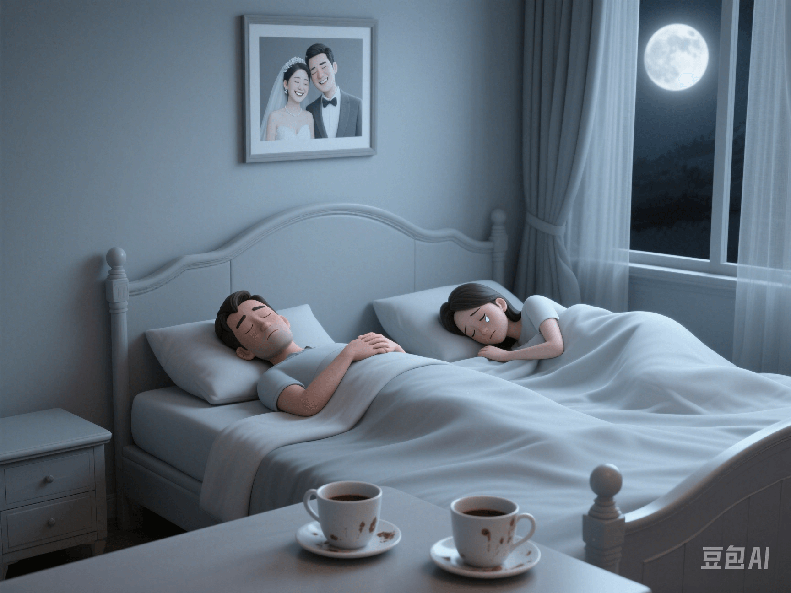

Can a Sexless Marriage Be Happy? Real Case Record and Psychological Analysis
PeaceLove.Top Insights :2025-04-12
💬 Introduction
"We've been married for 12 years and haven't had sex for 5 years, but we still think the other is the most important person in our lives." - This is a story that many couples are actually experiencing today.
📊 Current Situation: Asexuality ≠ Abnormality
According to a study in the Psychological Science journal, in long - term marriages in Europe, America, Japan, and South Korea, more than 40% of couples have a very low frequency of sexual intercourse, and it's not uncommon for them to have no sexual activity for more than a year. 🌟 Hot search topics: 'What to do about frigidity after marriage?', 'Can a sexless marriage last?', 'We're more like roommates, but we can't bear to part.' So, does a sexless marriage really mean failure? Let's listen to some real cases.
🎙️ Case Records: Different Paths, the Same Choice
🧡 Case 1: Happy Soul - Mate Type
Chen Lin (42 years old) & her husband (45 years old) | In a sexless marriage for 6 years. 'We have two children and run a coffee shop together. Life is trivial but stable. Sexual intercourse gradually decreased due to stress and finally stopped. But we still hug, chat, and kiss each other every day.' 🧠 Keywords: Non - sexual intimacy. Psychological analysis: They have established a so - called 'intimacy substitution mechanism', maintaining a sense of intimacy through companionship, communication, and common goals. The quality of their relationship has not declined but has become more stable.
💔 Case 2: Tolerant 'Happiness'
A Min (34 years old) | No sexual life since the 3rd year of marriage. 'I love him, but he always refuses my requests for intimacy, saying he's under stress and too tired... At first, I understood, but gradually I felt the'shame of being rejected'. I became inferior and irritable.' 🧠 Keywords: Unspoken sexual needs. Psychological analysis: This type of sexless marriage hides 'emotional freezing' and'repressed communication'. If ignored for a long time, it can turn into a breeding ground for cold violence or the intervention of a third party.
🧊 Case 3: Asexual Consensus Type
Lisa & Alex (same - sex couple, UK) | Married for 9 years. 'Both of them are asexual and have never had sexual desires for each other, but they really enjoy living and spending time together.' 🧠 Keywords: Diversity of sexual orientation and sexual identity. Psychological analysis: If 'asexuality' is a mutual choice, not out of shame, repression, or conflict, it doesn't affect happiness. Instead, it can build a more unique emotional support system.
🧭 Psychologists' Answer: Happiness Comes from Consensus + Intimacy, Not 'Frequency of Sex'
🔹 The famous marriage therapist Esther Perel believes that 'The real problem in marriage is not 'whether there is sex' but 'whether there is a connection'.' The core of a happy marriage is: 1. Whether the emotional connection really exists. 2. Whether both parties have reached a consensus on the relationship. 3. Whether they respect each other's needs (including sexual or non - sexual ones).
❤️ How to Judge Whether Your 'Sexless' Marriage Can Last?
✅ Positive - type sexless marriage: ● Both parties are satisfied with the current relationship. ● Sex is replaced by other forms of intimacy (such as hugging, sharing, and companionship). ● There are no emotions of repression, guilt, or shame. ❌ Crisis - type sexless marriage: ● One party has been dissatisfied for a long time but dare not say it. ● Frequent quarrels and cold wars, lack of emotional support. ● Using 'asexuality' as a means of punishment or manipulation.
🔧 If You Want to Improve the Relationship, You Can Try the Following:
🌟 1. Sexual psychological counseling. ● Assist in understanding the reasons behind the 'change in sexual desire' and rebuild the connection between the body and emotions. 📅 2. Set up 'emotional dating days'. ● Set aside a fixed time once a week 'just for the two of you', even if it's just taking a walk or cooking together. ✍️ 3. Start 'intimate communication exercises'. ● Say to each other: 'What I most desire recently is ____' instead of 'Why do you always ____?'
✨ Conclusion
A sexless marriage can be a quiet, stable, and deeply - understood haven. It can also be a signal light that needs repair and re - connection. But it's never a label of shame or failure. 💬 The key questions are: 'Are we both happy in this way?' 'Am I willing and able to get closer to you?'